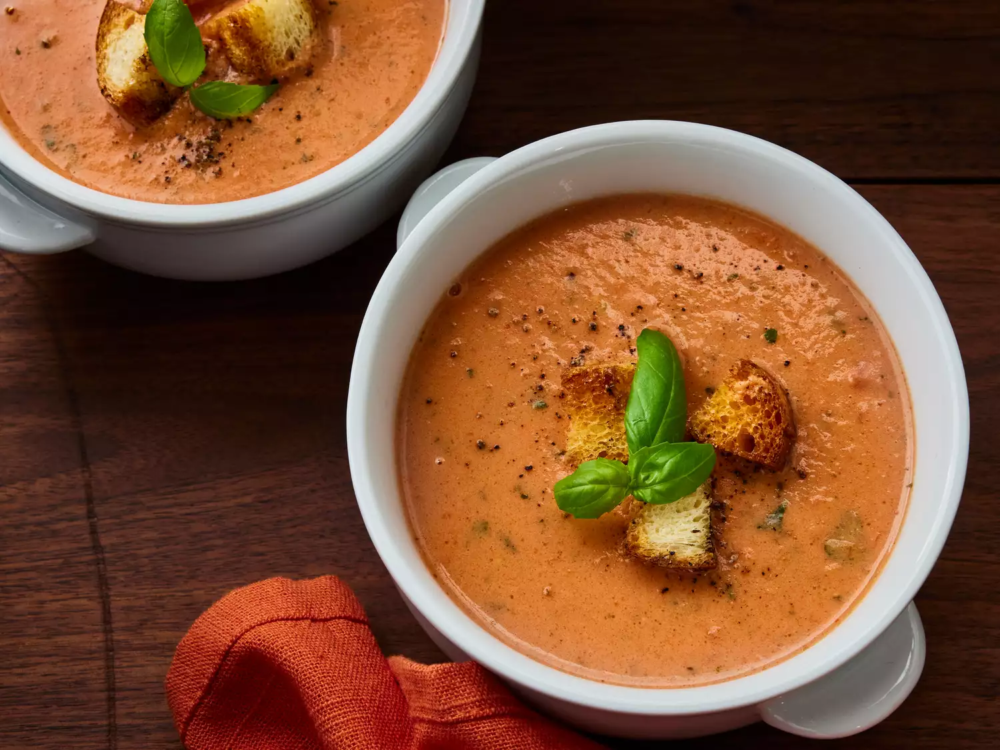

Rich and Creamy Tomato Basil Soup

Description
This tomato and basil soup recipe features fresh ingredients, a decadent texture, and
tons of flavor.
Ingredients
- 4 tomatoes - peeled, seeded and diced
- 4 cups tomato juice
- 14 leaves fresh basil
- 1 cup heavy whipping cream
- ½ cup butter
- alt and pepper to taste
Steps
- Gather all ingredients.
- Place tomatoes and juice in a stockpot over medium heat; bring to a simmer. Cook
until tomatoes have softened, about 30 minutes.
- Remove the pot from heat. Add basil leaves to the pot.
- Use an immersion blender to puree soup until smooth.
- Stir in heavy cream and butter. Cook and stir over medium heat until butter is
melted, about 5 minutes. Do not boil. Season with salt and pepper.
- Serve hot and enjoy!
Back to recipes